Non-Profit
Gifts, Grants, and Contributions to Non-Profits Continue to Grow

What are the measures?
The total amount of gifts, grants, and contributions to non-profit organizations. This data is from the Internal Revenue Service tax reports of organizations, based in Santa Barbara County, that normally have receipts of more than $50,000 per year. There are some small nonprofits that choose not to file that are missed in the data. The data is adjusted for inflation.
Why are they important?
Non-profit organizations provide important services not always addressed by other sectors of our community, such as attending to the needs of youth, homeless, victims of crime, low income families, the environment, sports, the arts, and much more.
How are we doing?
In 2017, contributions from private sources to nonprofits continue to rise accounting for most of the growth. From 2000 to 2017, countywide non-profit fundrasing grew from around $750 million to over $1.5 billion inflation-adjusted dollars. Most of the non-profit activity was concentrated in the South Coast.
A break-down of the top eight fundraising cities in the County is below. In 2017, Santa Barbara City non-profits recieved the highest amount of contributions. The large jump for Santa Barbara and drop for Goleta in 2015 was mostly due to the relocation of Direct Relief.
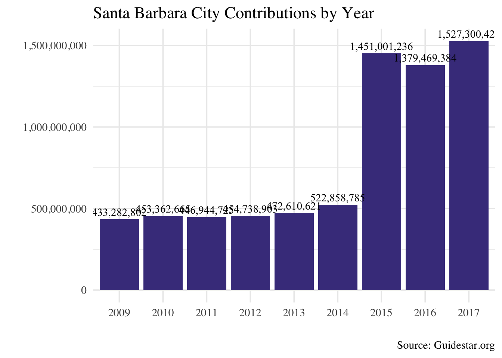
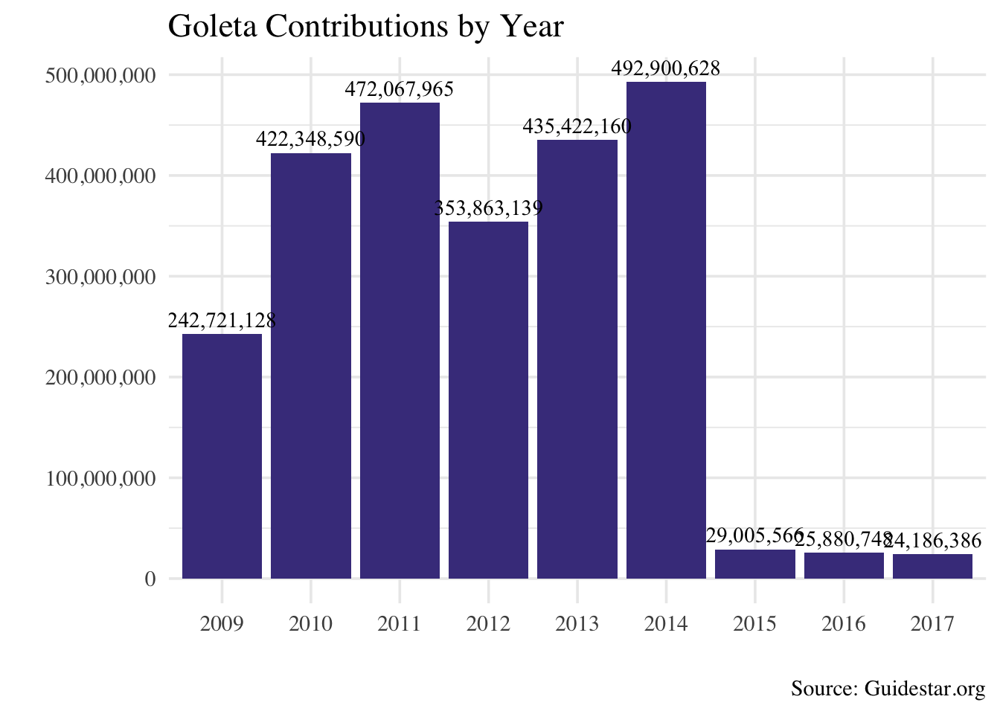
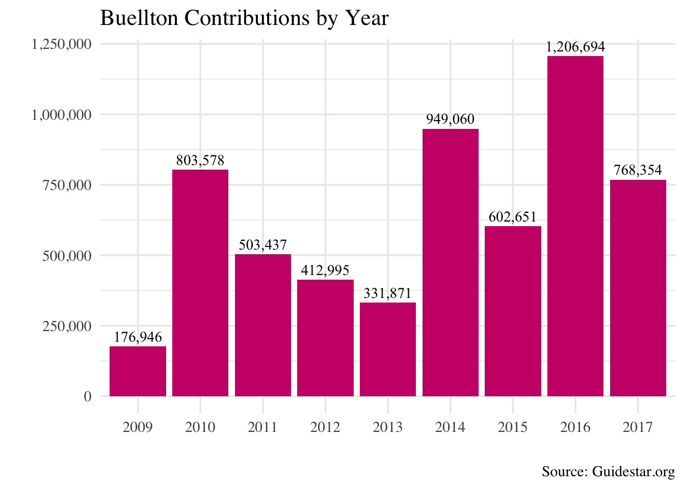
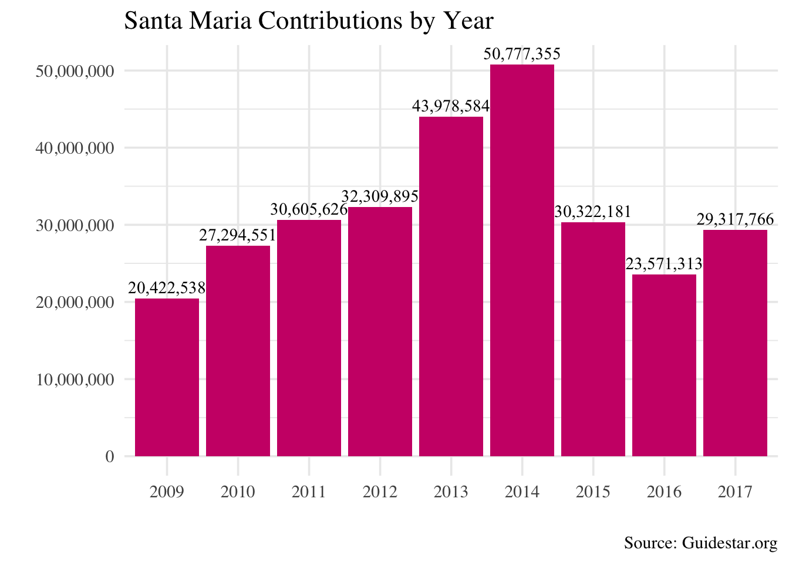
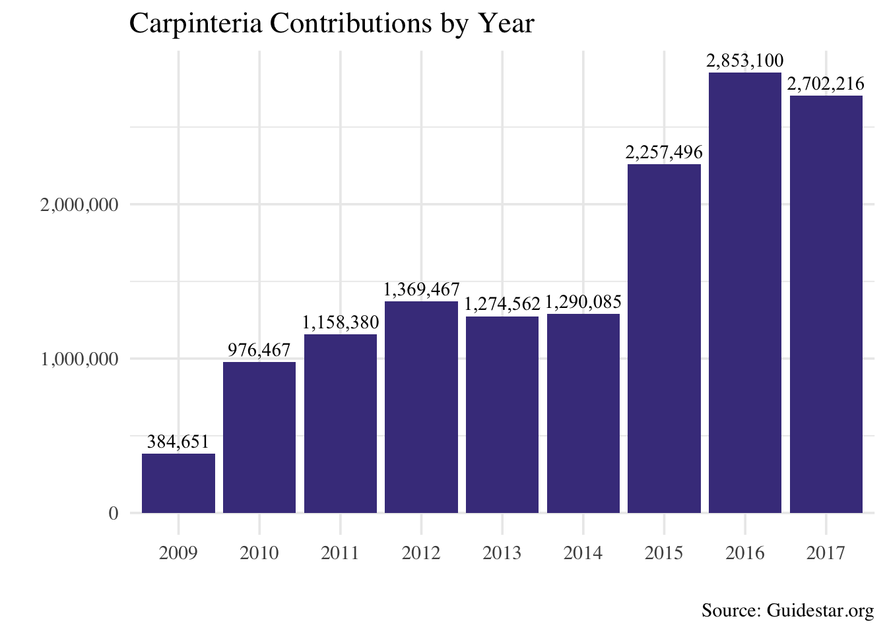
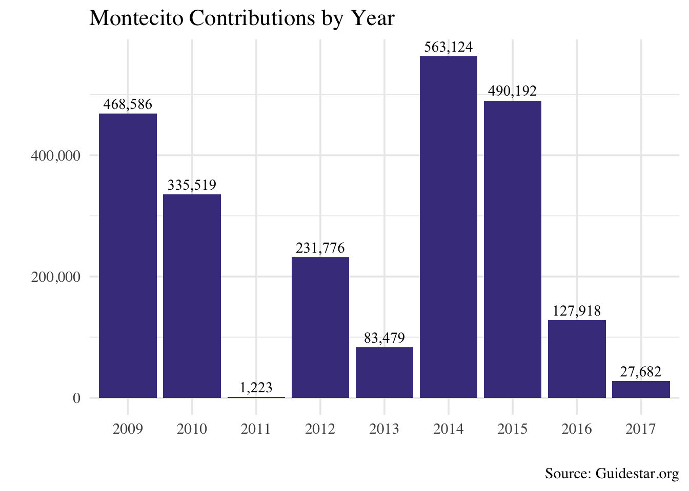
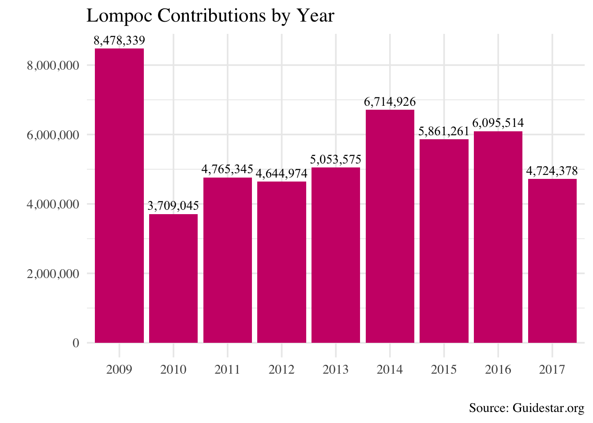
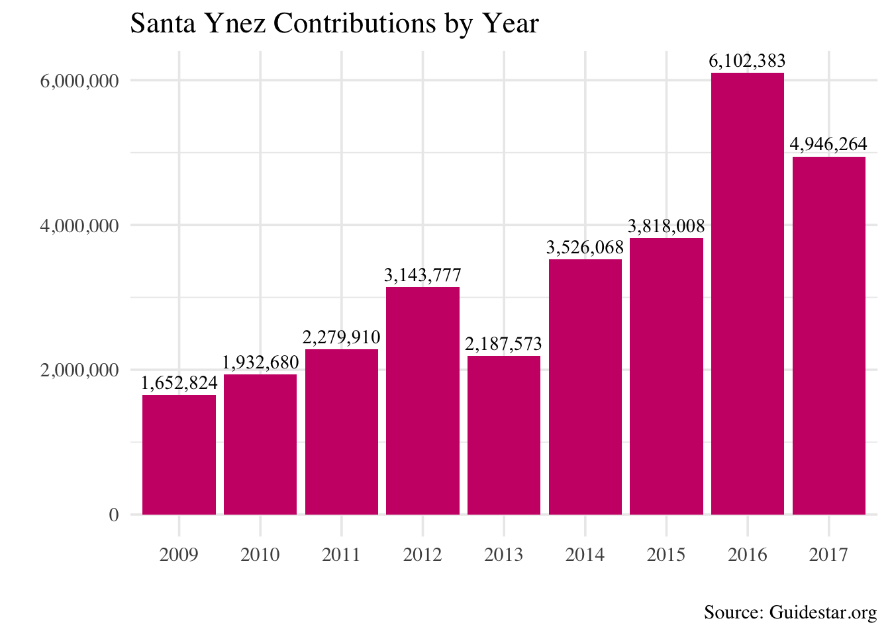
Non-Profit Contributions Support A Wide Range Of Charitable Purposes
## `summarise()` ungrouping output (override with `.groups` argument)
## `summarise()` ungrouping output (override with `.groups` argument)What are the measures?
Drawn from the IRS data for organizations that recieved more than $50,000 in contributions, this provides a snapshot of the different types of organizations in the County as well as the amount of contributions goes to each sector, expressed as a percentage of the whole.
Why is it important?
Combined with the total contributions, gifts, and grants data presented in the last couple of pages, one can get a solid picture of where the contributions go and where they come from.
How are we doing?
In 2017, Arts, Culture, and Humanities organizations were the smallest percentage of non-profits in Santa Barbara at 3.6 percent, while Human Services made up the majority, with Direct Relief making up a big part of this perfentage. Despite the bigger weight on Human Services, the diversity of purposes reflects Santa Barbara’s non-profits commitment to address the community needs in all areas.
Direct Relief
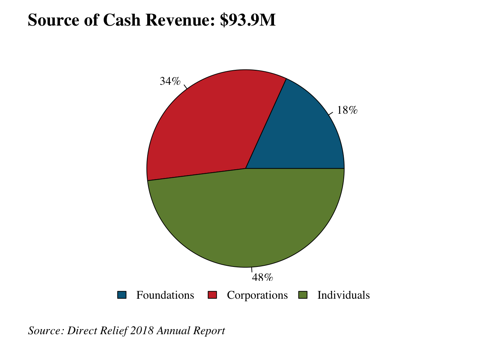
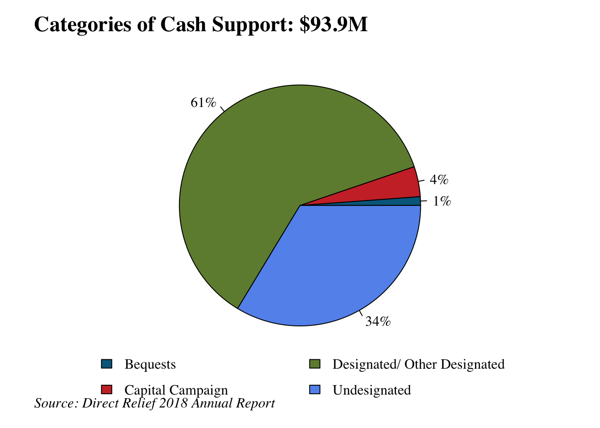
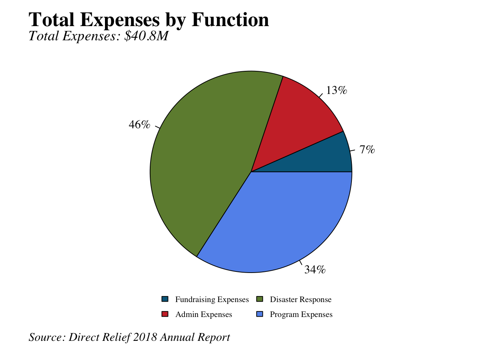What are the measures?
Revenues and and expenses of the nonprofit organization Direct Relief. This data is taken from their annual report, which summarizes and explains their financial statements for each fiscal year.
Why are they important?
By looking at the contributions to Direct Relief, we can get an idea of charitable giving in the county. We can also proxy the level of nonprofit activity as seen through their functions. However there is no information on specifically where the funding is coming from in terms of local or outside the county, so it is not a perfect measure.
How are we doing?
Direct Relief receives most of their contributions in the form of in-kind contributions, which totaled $1.1 billion in 2018 as opposed to $93.9 million in cash contributions. This means 92% of contributions were in-kind. This constitutes such a high percentage because the in-kind contributions are largely in the form of medicines, which have a high market valuation. The majority of Direct Relief’s cash support is designated, meaning it is meant for specific disasters such as the California mudslides and fires as well as other national and international devastations. In terms of only cash contributions, we see that individual contributions are about equal to those made by foundations and corporations.
United Way of Santa Barbara County
What is the measure?
The amount of revenue United Way of Santa Barbara County generates through workplace campaigns, grant seeking, bequests, and other activities.
Why is it important?
Non-profit organizations provide important services not always addressed by other sectors of our community – attending to the needs of the homeless, victims of crime, low-income families, the environment, the arts, and much, much more. United Way provides resources to children, families, and seniors in the Santa Barbara Community, focusing primarily on improving education, health, and financial empowerment. While contributions made to United Way constitute a fraction of total non-profit giving in our community, it is one proxy measure for charitable giving.
How are we doing?
In the fiscal year of 2016-2017, United Way generated $1,835,409 in total revenue with $1,560,170 coming from contributions and grants. After reaching an all-time high in 2012-2013 of $4,112,841, revenues and contributions have trended down and are now less than half that number in real terms.